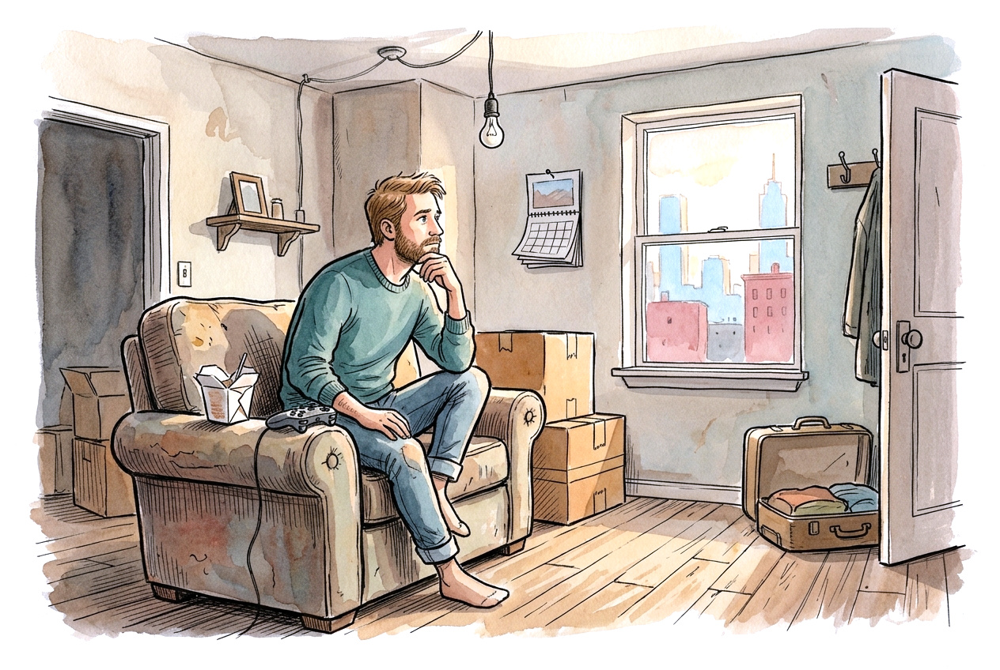
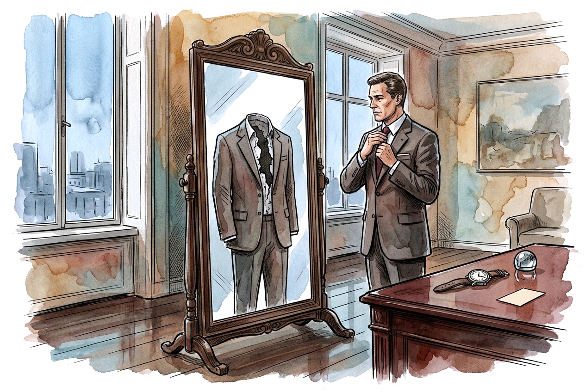

Maturidade não tem cara de adulto
9 de outubro de 2026 · Opinião · 8 min de leitura · Luis Augusto Matos PontesDois homens de uns 40 anos. Um chega de camiseta de banda, mochila nas costas, fone no pescoço, comentando que passou o fim de semana zerando um jogo. O outro vem de camisa social e relógio bom, falando de investimento. Qual dos dois é o mais maduro?
A resposta que vem rápida é o segundo, e é justamente essa pressa que o psicólogo Ricardo Chagas Nascimento questiona no vídeo "O adulto que parece adulto, mas não amadureceu", que serviu de inspiração para este artigo. Aqui, as ideias dele ganham base bíblica e exemplos da cultura pop. O ponto de partida é simples: só olhando, não dá pra saber. Maturidade não é estética, embora a sociedade julgue por ela o tempo todo. O caminho passa pela Bíblia, por Patrick Bateman, por uma pilha de séries e por alguns jogos. A tese cabe numa frase: na visão cristã, maturidade é ser formado à imagem de Cristo, e isso se vê no caráter, no jeito de lidar com o outro e com o presente, nunca na roupa nem no cargo, e muito menos no que se guarda na estante.
A vida que sempre começa amanhã

A psicologia analítica tem um nome para esse impasse: puer aeternus, "juventude eterna", expressão que dá título ao livro de Marie-Louise von Franz e está por trás da famosa síndrome de Peter Pan. O conceito descreve algo que quase ninguém associa ao termo. O problema nunca foi gostar de videogame, quadrinhos ou K-pop. O problema é viver numa "vida provisória", com a sensação de que a vida de verdade está prestes a começar, só que ainda não começou.
O sintoma mais revelador é de gramática: uma frase boa seguida de um "mas". É um ótimo emprego, mas. É uma pessoa incrível, mas. Quem já se ouviu falando assim reconhece o padrão. Por trás dele está a ideia de que crescer é transformar possibilidades em escolhas, e que toda escolha cobra uma renúncia. Dá medo porque as portas fechadas são bem visíveis, e as que ficaram abertas ainda não provaram nada.
BoJack Horseman talvez seja a melhor ilustração disso na TV. O cavalo vive esperando voltar a ser o astro de uma sitcom dos anos 90, e todo o resto, inclusive as pessoas que gostam dele, vira sala de espera. É a segunda face do conceito, a dificuldade de largar um passado que já não sustenta o presente, e Von Franz a analisa na vida de Saint-Exupéry, autor de O Pequeno Príncipe.
A versão bem vestida

Existe uma imaturidade que não parece imaturidade, porque se veste de adulto. Von Franz chama de pseudoadaptação: a pessoa aprende a se encaixar socialmente, mas o problema por dentro continua intocado. A sociedade, aliás, premia mais a aparência de maturidade do que a maturidade em si, e abundam influenciadores vendendo uma cartilha de como virar adulto que, na prática, ensina só a parecer adulto.
O caso extremo é Patrick Bateman, o protagonista de Psicopata Americano, do romance de Bret Easton Ellis e do filme de 2000. Executivo de Wall Street, rico, em forma, com rotina de cuidados com a pele e reserva nos restaurantes caros. Na ficção ele também é um assassino, e a obra é uma sátira da cultura de status dos anos 80, então ninguém precisa concluir que quem se preocupa com aparência é perigoso. O que importa aqui é o que ele escancara.
Há uma cena em que os colegas comparam cartões de visita e Bateman quase desmorona de inveja porque o cartão de um deles é mais bonito. Um homem com todos os símbolos da vida adulta cujo equilíbrio emocional depende da textura de um pedaço de papel. No fim ele tenta confessar o que fez e ninguém registra. O advogado confunde o nome dele, a conversa segue, e Bateman conclui que a confissão não serviu pra nada. Num mundo em que todo mundo só olha a casca, não sobra ninguém capaz de ouvir uma confissão.
Mad Men tem a versão elegante do mesmo problema. Don Draper é o publicitário que todo mundo quer ser, e a vida dele foi construída sobre a identidade de um oficial morto, assumida na Guerra da Coreia. Casas, casamentos, prêmios. Nada disso preenche o que ele não consegue encarar.
A Bíblia conhece esse tipo de gente. Jesus chamou os fariseus de sepulcros caiados, bonitos por fora e cheios de ossos por dentro (Mt 23:27). Quando Samuel avalia os filhos de Jessé, Deus o avisa de que o homem olha o que está à vista, mas o Senhor olha o coração (1Sm 16:7). E a igreja de Sardes recebe a frase mais dura de todas: você tem nome de quem vive, e está morta (Ap 3:1).
Peter Pan e Bateman parecem opostos, mas fogem da mesma coisa, que é encontrar a própria vida de verdade. Um foge pra fantasia, o outro pra encenação.
O que a Bíblia chama de maduro
A palavra grega mais usada no Novo Testamento é teleios, geralmente traduzida por "perfeito", mas que significa algo mais próximo de completo, alguém que chegou ao ponto a que se destinava. Maturidade, então, se define pelo alvo, e o alvo é Cristo. Paulo diz isso em Efésios 4: crescer até a medida da plenitude de Cristo, parar de ser "menino" que muda de opinião a cada vento e falar a verdade em amor.
Dois traços se repetem nos textos. A primeira é que maturidade ali quase sempre é relacional. Os crentes de Corinto tinham dons, conhecimento e eloquência, e Paulo os chama de crianças em Cristo porque viviam de ciúme e de racha (1Co 3:1-3). A segunda é que ela acontece no presente. Quando Israel foi levado para a Babilônia, o lugar mais provisório que dá pra imaginar, Deus mandou uma carta dizendo pra construírem casas, plantarem hortas, casarem os filhos e procurarem o bem da cidade (Jr 29:5-7). Paulo escreve da prisão que aprendeu a viver contente em qualquer situação (Fp 4:11). Aprendeu. Contentamento ali é matéria de estudo, e isso desmonta o "mas".
E existe um versículo que resolve a questão dos dois homens do início. Em 1Coríntios 14:20, Paulo pede que os coríntios sejam como crianças quando o assunto é o mal e adultos no juízo. A Bíblia separa infantilidade de infância. Infantilidade é instabilidade, egocentrismo, incapacidade de digerir comida sólida (Hb 5:12-13). Infância, no sentido de Jesus, é confiança e dependência, e é dela que ele fala quando diz que só entra no Reino quem se faz como criança (Mt 18:3).
Quando Paulo diz que deixou as coisas de criança (1Co 13:11), o contexto é o jeito de falar e raciocinar diante de um conhecimento ainda parcial. Não é o fim do lazer. Zacarias, aliás, descreve a cidade restaurada com ruas cheias de meninos e meninas brincando (Zc 8:5). A Bíblia não diz uma palavra sobre videogame, claro, mas trata brincar e rir como bênção, não como defeito.
Quem cresce na tela
A cultura pop está cheia de adultos vazios, mas também é o lugar onde a nossa época mais conta histórias de amadurecimento. Paulo citava poetas gregos quando falou aos atenienses (At 17:28), então há precedente para ler a cultura como espelho, desde que ela não vire ídolo.
Zuko, em Avatar: A Lenda de Aang, começa o desenho atrás da aprovação de um pai que o marcou no rosto, e muda de lado quando decide fazer o certo sem aprovação nenhuma. O tio Iroh, que parece só um velho obcecado por chá, talvez seja o personagem mais maduro da animação: humilde, leve, capaz de perder sem se destruir. É a prova de que maturidade e aparência andam separadas.
Em Ted Lasso, o técnico que ri de tudo aprende aos poucos a pedir ajuda, e a série insiste que gentileza e vulnerabilidade custam mais caro que a pose. Em Toy Story 3, Andy entrega os brinquedos de que mais gostou a uma criança que vai cuidar deles, e o filme trata isso como crescimento sem negar a infância.
O problema é que muita gente olha pros vilões elegantes, como Bateman, e enxerga inspiração. Todo mundo já viu edit do Bateman com música eletrônica no TikTok, geralmente vendido como exemplo de disciplina. A sátira virou propaganda. Isso mostra o quanto o discernimento importa, aquelas faculdades exercitadas pra distinguir o bem do mal de que fala a carta aos Hebreus (Hb 5:14).
Espelho ou anestesia
O jogo, a série ou o quadrinho ajudam a descansar, agradecer e olhar a própria vida com mais verdade? Ou servem para adiar o que já se sabe que precisa ser feito? A mesma mídia pode ser as duas coisas, dependendo de quem assiste e de quando.
Algumas perguntas ajudam a separar. Há alguma decisão sendo adiada à espera de um momento certo? Existe algo que se mostra por aí e não bate com o que se vive escondido? Diante de uma correção, a reação é escutar ou começar a se defender? Há alguém que conheça a pessoa de verdade e tenha licença pra confrontá-la?
Nada disso funciona como autoaperfeiçoamento. A Bíblia é clara ao dizer que ninguém amadurece pra ser aceito. A aceitação vem antes, pela fé em Cristo, e o crescimento é o que o Espírito faz em quem já foi aceito (Gl 3:3; Fp 1:6). E crescer é algo de gente em comunidade (Ef 4:16). Quem tenta amadurecer sozinho costuma acabar de terno e cartão de visita.
Voltando aos dois homens do começo, continua impossível dizer qual é o mais maduro. Só se descobre conversando com a esposa de cada um, com os filhos, com os amigos, e vendo como cada um lida com uma segunda-feira ruim.
Referências
- NASCIMENTO, Ricardo Chagas. O adulto que parece adulto, mas não amadureceu (vídeo).
- VON FRANZ, Marie-Louise. Puer Aeternus.
- ELLIS, Bret Easton. Psicopata Americano, 1991. HARRON, Mary (dir.). American Psycho, 2000.
- Bíblia: passagens citadas por referência, para conferir na tradução de sua preferência.